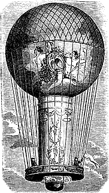

Friday, January the 30th, 2009
back to: title, date or indexes

We travelled to Hoon by hot air balloon. I took my harpoon, and impaled a wolf that was roaming the woodland below us. We hauled the wolf into the basket of our balloon, by a long and sturdy rope that was tied to the end of the harpoon. We arrived in Hoon, two balloonists and an impaled wolf, making a bumpy landing. The Hoon Head Honcho of Hunted Wolves was there to greet us. “I will have that wolf,” he said, “It is not yours to keep. Here in Hoon we keep all hunted wolves, including those that have been impaled by a harpoon shot from a hot air balloon.” But we wanted to keep our harpooned wolf, as a rug for the basket of our balloon, so I pulled the harpoon out of the wolf and pointed it at the man from Hoon. “We shall keep our wolf. If you try to take it you will feel the point of this harpoon upon your neck,” I said. We did not know that the man from Hoon was a Wolfman. His head changed shape, and then the rest of him, and with his savage claws he tore the silken fabric of our balloon. We were trapped in Hoon, helpless among the Wolfmen.
Source : Victorian Tales Of Derring-Do In Hoon & Its Hinterland
Hooting Yard on the Air, March the 12th, 2009 : “Pact And Retort” (starts around 09:27)